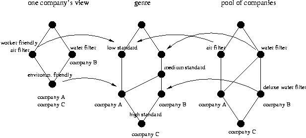

Ethological Classification: A Model For Ordering the Commercial Workplace that Draws on Collective Practice
Elisabeth Davenport, Napier University Business School,(e. davenport@napier.ac.uk)
Howard Rosenbaum, SLIS Indiana University, (hrosenba@indiana.edu)
Uta Priss, SLIS Indiana University, (upriss@indiana.edu)
Background
We would like to present a novel classification approach to the Idea mart, and receive feedback from colleagues. In certain circumstances an approach to classification may be useful that is based on repertoires of recurring activities and their associated documentation (‘genre repertoires’); we label this ‘ethological classification’ (Davenport and Rosenbaum 2000) . The approach offers an alternative to the search for ‘deep structure’ that organizes knowledge in a working group: as genres embody the practical understanding of such groups, they offer a ‘surface’ representation of knowledge that may be sufficient for some organizational purposes: finding groups to share activities, for example. As autogenic forms, genres may be taken as valid representations of the practical knowledge of the communities in which they emerge. The ‘ethological’ approach may solve some of the problems associated with recent attempts to design ‘ecological work-based classification’ schemes (Pejtersen and Albrechtsen, 2000) where the search for ‘invariant structures’ and their validation can be extremely resource intensive. The ‘ethological’ approach, a form of bricolage, which draws on knowledge that is to hand, offers a thrifty alternative.
Rationale:
The context of this proposal is e-commerce, and the needs of ad hoc enterprises that may have to be configured rapidly to bid for projects. In some cases, prospective members of teams may not meet face to face, but will have to find each other on the basis of representations. These representations or ‘documents’ may be of different types – profiles, and recommendations and endorsements in the early stages of a relationship, standard forms or documents of the type that characterize a given process or domain and its contractual requirements. Documentary genres may be aggregated into sets or profiles, indexed and marked up to form libraries of multidimensional objects, which capture activities, representations of activities, and the constraints under which activities take place. In certain circumstances, such a system may act as a surrogate for the building of face to face partnerships.
Working model
Using Formal Concept Analysis and Barwise and Seligman’s (1997) theory of information flow, we have constructed a model for compliance with eco-friendly production regulations. For the purposes of illustration, we assume a scenario where groups have no means of meeting up or checking on each other, and where they must rely on the presence of certain documentary forms as evidence of certain activities. We have thus equated companies and documents in the rubrics of the Diagram 1. The model contains three conceptual structures (concept lattices): a lattice of the pool of documents/companies and their features; a lattice that describes the individual view from a company/document set; and a lattice for the documentary genre repertoire (‘compliance’) that serves as a medium between an individual documentary/company view and the pool of documents/companies.
The model provides for flexible information exchange between the different conceptual structures. The individual company’s knowledge (held in its documents) is mapped to the shared knowledge in the genre. The figure shows an example where an individual company defines a process as "environmentally friendly" if it "uses water filters and air filters". That is mapped to "medium environmental compliance" in the genre, which is defined as "using air filters and water filters or using deluxe water filters (but not air filters)". The information flow theory allows mapping of these overlapping but slightly different notions. The genre lattice facilitates the selection of companies from the pool of companies according to the individual company’s notion of "environmental friendly". In this case company A and C comply with the individual company’s notion of "environmental friendly". On an implementation level every lattice represents the knowledge base of a software agent. The genre is a separate agent that contains shared knowledge but also serves as the communication channel between the individual agents.

Diagram 1
References
Barwise, K. J. and Seligman, J. (1997). Information flow: the logic of distributed systems. Cambridge University Tracts in Theoretical Computing, 44.
Davenport, E. and Rosenbaum, H. (2000) A system for modeling activities in the workplace that is based on the shape of documents. Proceedings of the Sixth International ISKO Conference, 10-13 July 2000, Toronto, Canada (p. 352-358) Würzburg, Germany: Ergon Verlag.
Pejtersen, A.M. & Albrechtsen, H. (2000). Ecological work based classification schemes. Proceedings of the Sixth International ISKO Conference, 10-13 July 2000, Toronto, Canada (p. 97-109). Würzburg, Germany: Ergon Verlag.
Questions
How can we match human interests at the level of the group? (e.g. groups who seek others who can share their work practices)